3．代数数
复整数的理论是代数数论这一巨大课题发展方向上的一个阶段。无论欧拉或拉格朗日都没有预想到他们关于复整数的工作所打开的丰富可能性。高斯也没有想到。
这个理论产生于要证明费马（Pierre de Fermat）关于
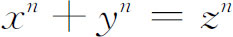
的断言的企图之中。n＝3，4和5的情况已经讨论过了（第25章第4节）。高斯试图证明n＝7时的断言，但失败了。或许因为他厌恶自己的失败，他在1816年给奥伯斯（Heinrich W．M．Olbers，1758—1840）的一封信中说：“我的确承认，费马定理作为一个孤立的命题对我没有多少兴趣，因为可以容易地立出许多那样的命题，人们既不能证明它们也不能否定它们。”n＝7的特殊情况由拉梅（Gabriel Lamé）在1839年予以解决(10)，而狄利克雷建立了n＝14的论断(11)。但是，一般命题没有被证明。这个问题由库默尔（Ernst Eduard Kummer，1810—1893）接续下来，他从神学转向数学并做了高斯和狄利克雷的学生，后来在布雷斯劳（Breslau）和柏林做教授。虽然库默尔的主要工作是在数论方面，但他在几何学方面还做出了漂亮的发现，这起源于光学问题；他在大气对光的反射的研究中也做出了重要的贡献。
库默尔把
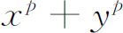
（p为素数）分解成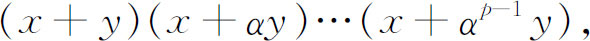
这里α是一个虚的p次单位根。也就是，α是
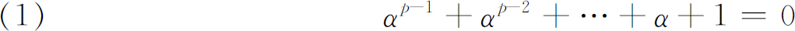
的一个根。这就引导着他把高斯的复整数理论推广到由（1）那样的方程所引进的代数数，即形如
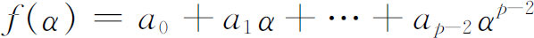
的数，其中每一个ai是通常的（有理）整数。［因为α满足（1），所以
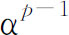
的项能用低次幂的项来替换。］库默尔把这样的数f（α）叫做复整数。在1843年库默尔对整数、素整数、可除性以及类似东西给出了适当的定义（我们将马上给出标准定义），然后错误地假定了在他所引进的那类代数数中唯一因子分解成立。在1843年，当他把他的手稿寄给狄利克雷的时候，他指出，这个假定对证明费马定理是必需的。狄利克雷通知他，唯一因子分解仅对某些素数p成立。附带说一句，对代数数假定唯一因子分解，柯西和拉梅也犯了同样的错误。在1844年，库默尔(12)认识到狄利克雷批评的正确性。
为了重建唯一因子分解，库默尔在1844年(13)开始的一系列论文中创立了理想数的理论。为理解他的思想起见，我们来考虑
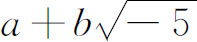
所生成的域，这里a，b是整数。在这个域中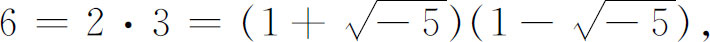
而且容易证明这四个因子都是素整数。这时唯一因子分解不成立。对这个域，让我们引进理想数
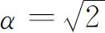
，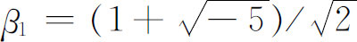
，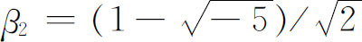
。我们看到，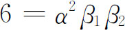
。这样，6现在唯一地被表示为四个因子的乘积，就域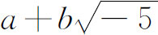
而论，这四个因子全是理想数(14)。通过这些理想数和其他素数，在这个域中因子分解是唯一的（除去构成可逆元素的因子）。借助于理想数，人们可以证明，在预先缺乏唯一因子分解的所有域中，普通数论的一些结果成立。库默尔的理想数虽是普通的数，但是不属于他所引进的代数数类。而且，理想数也不是以一般方式定义的。就费马定理来说，库默尔用他的理想数确实成功地证明了它对许多素数是正确的。在前100个整数中，只有37，59和67不为库默尔的证明所包括。然后，库默尔在1857年的一篇论文中(15)将他的结果扩展到这些例外素数。这些结果又进一步地为米里马诺夫（Dimitry Mirimanoff，1861—1945）所扩展，他是日内瓦大学的教授，完善了库默尔的方法(16)。米里马诺夫证明了对于直到256的每一个n，费马定理是正确的，只要x，y和z与指数n互素。
库默尔是研究由单位根形成的代数数，而高斯的学生戴德金（Richard Dedekind，1831—1916）却以全新而有启发性的方式探讨唯一因子分解的问题，他在德国的高等技术学校作为一名教师花费了一生中的50个年头。戴德金在他所编辑的狄利克雷的《数论》（Zahlentheorie，1871）的第二版的附录10中，发表了他的结果。在同一书(17)的第三版和第四版的附录中他扩展了这些结果。就是在这里他创立了现代代数数的理论。
戴德金的代数数理论是高斯的复整数和库默尔的代数数的一般化，但是这个一般化与高斯的复整数多少有些差别。一个数r，若它是方程
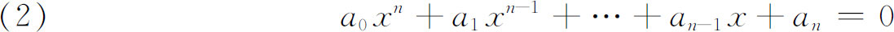
的根，而不是次数比n低的这种方程的根，则称它是一个n次代数数，式中ai是普通整数（正的或负的）。如果在（2）中x的最高次幂的系数是1，则所有的解叫做n次代数整数。代数整数的和、差、积仍是代数整数，并且，如果一个代数整数是有理数，则它是普通整数。
我们应当注意到在新定义之下，一个代数整数可以包括普通分数。例如
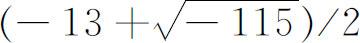
是一个二次代数整数，因为它是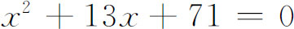
的根。反之，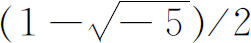
是一个二次代数数而不是代数整数，因为它是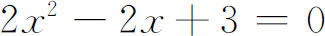
的根。戴德金接着引进了数域的概念。这是一个实数或复数的集合F，满足这样的条件：如果α，β属于F，则
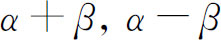
，αβ属于F，而且如果β≠0，则α/β也属于F。每一个数域都包含有理数，因为如果α属于这数域，则α/α即1也属于它，因此1＋1，1＋2等也都属于它。不难证明，一切代数数的集合形成一个域。如果人们从有理数域出发，而θ是一个n次代数数，则θ同自身及有理数在四种运算之下结合起来所形成的集合也是n次域。这个域也可以说成是包含有理数和θ的最小域。它也称为有理数的扩域。这样的域不包含所有的代数数，而是一个特殊的代数数域。现在通常记为R（θ）。虽然人们可以期望R（θ）中的数是商f（θ）/g（θ），其中f（x）和g（x）是任何具有有理系数的多项式，人们还是能够证明，如果θ是n次的，则R（θ）的任何一个数α能表示成形式
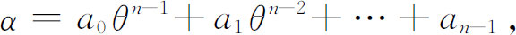
这里ai是普通的有理数。此外，存在着这个域的n个代数整数θ1，θ2，…，θn，使得这个域中的所有代数整数都有形式
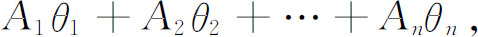
这里Ai是普通的正的或负的整数。
环，是戴德金引进的概念，本质上是这样一个集合，即如果α和β属于这个集合，则α＋β，α－β和αβ也属于这个集合。所有代数整数的集合形成一个环，任何一个特殊代数数域中的一切代数整数也形成环。
说代数整数α能被代数整数β整除，如果存在一个代数整数γ使得α＝βγ。如果j是一个代数整数，它能整除代数数域中的每一个其他整数，则称j是这个域的一个可逆元素。这些可逆元素，其中包括＋1和－1，是普通数论中的可逆元素＋1和－1的一般化。如果代数整数α不是零或可逆元素，而且如果它分解为βγ，其中β和γ属于这同一个代数数域，就蕴含着β或γ是这个域的可逆元素，则称α是一个素数。
现在让我们来看看算术基本定理成立的范围。在一切代数整数所形成的环中没有素数。让我们考虑在特殊的代数数域R（θ）中的整数环，譬如域
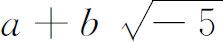
，其中a和b是普通的有理数。在这个域中唯一因子分解不成立。例如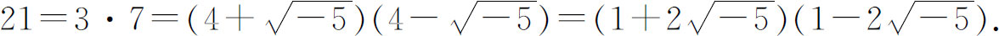
最后这四个因子中的每一个在如下意义下是素数，即它不能表示为形如（c＋
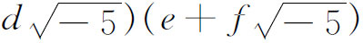
的乘积，其中c，d，e和f是整数。另一方面让我们考虑域
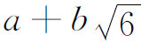
，其中a和b是普通的有理数。如果对这些数实行四种代数运算，则仍得到这种数。如果限定a和b是整数，则得到这个域的（2次）代数整数。在这个域中我们可将可逆元素的等价定义取为：若1/M也是代数整数，则代数整数M就是可逆元素。于是1，－1，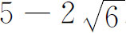
和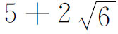
都是可逆元素。每个整数都可被任一可逆元素整除。进而，这个域中的一个代数整数如果仅能被它自己和可逆元素整除，则它是素的。现在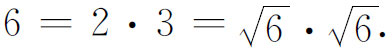
看来仿佛不存在素因数的唯一分解。但是上面所展示的因数不是素数。事实上，
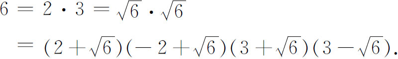
最后四个因数中的每一个都是这个域中的素数，而唯一分解在这个域中确实是成立的。
在特殊代数数域里的整数环中，代数整数分解为素因数总是可能的，但是唯一分解一般不成立。事实上，对形如
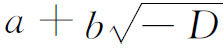
的域，其中D可取不为平方数整除的任何正整数值，至少对直到109的D，仅当D＝1，2，3，7，11，19，43，67和163时唯一因子分解定理才是合理的(18)。因此代数数本身不具有唯一因子分解的性质。